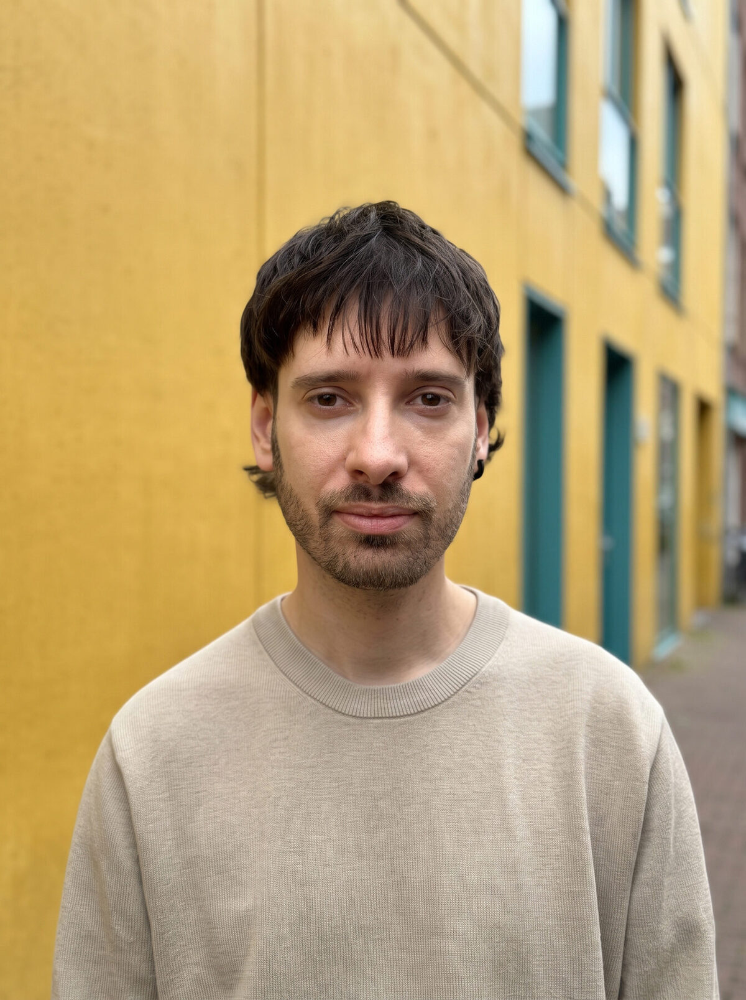

Ready
It all starts with a good story. Storytelling with broad experience behind it.
Vitoria-Gasteiz

For the past 10 years I've worked in the industry, always inside agencies and production companies.
This site is something else. It's my personal project: a home for the work that's mine, and a truer reflection of what I make when the story is my own.
It all starts with a good story. Storytelling with broad experience behind it.
Motion graphics, 2D-3D animation and compositing. Workflows in After Effects, DaVinci Resolve, Final Cut Pro and Cinema 4D.
Own shooting gear and know-how from the latest brands in the industry: RED, Blackmagic, Sony, Freefly, DJI.